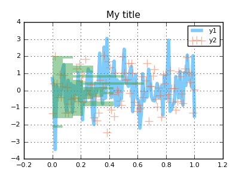
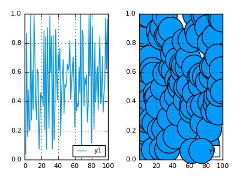
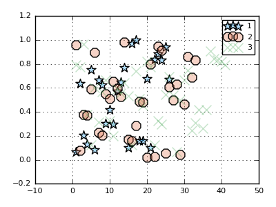

Processing Pipeline
Plotting commands will send inputs through a series of preprocessing steps, in order to convert, simplify, and generalize. The idea is that end-users need incredible flexibility in what (and how) they are able to make calls. They may want total control over plot attributes, or none at all. There may be 8 attributes that are constant, but one that varies by data series. We need to be able to easily layer complex plots on top of each other, and easily define what they should look like. Input data might come in any form.
I'll go through the steps that occur after a call to plot() or plot!(), and hint at the power and flexibility that arises.
An example command
Suppose we have data:
n = 100 x, y = linspace(0,1,n), randn(n, 3)
and we'd like to visualize x against each column of y. Here's a sample command in Plots:
using Plots; pyplot() plot(x, y, line = (0.5, [4 1 0], [:path :scatter :density]), marker=(10, 0.5, [:none :+ :none]), fill=0.5, orientation = :h, title = "My title")

In this example, we have an input matrix, and we'd like to plot three series on top of each other, one for each column of data. We create a row vector (1x3 matrix) of symbols to assign different visualization types for each series, set the orientation of the histogram, and set alpha values.
For comparison's sake, this is somewhat similar to the following calls in PyPlot:
import PyPlot fig = PyPlot.gcf() fig[:set_size_inches](4,3,forward=true) fig[:set_dpi](100) PyPlot.clf() PyPlot.plot(x, y[:,1], alpha = 0.5, "steelblue", linewidth = 4) PyPlot.scatter(x, y[:,2], alpha = 0.5, marker = "+", s = 100, c="orangered") PyPlot.plt[:hist](y[:,3], orientation = "horizontal", alpha = 0.5, normed = true, bins=30, color="green", linewidth = 0) ax = PyPlot.gca() ax[:xaxis][:grid](true) ax[:yaxis][:grid](true) PyPlot.title("My title") PyPlot.legend(["y1","y2"]) PyPlot.show()
Step 1: Preprocess Attributes
See replacing aliases and magic arguments for details.
Afterwards, there are some arguments which are simplified and compressed, such as converting the boolean setting colorbar = false to the internal description colorbar = :none as to allow complex behavior without complex interface, replacing nothing with the invisible RGBA(0,0,0,0), and similar.
Step 2: Process input data: User Recipes, Grouping, and more
Plots will rarely ask you to pre-process your own inputs. You have a Julia array? Great. DataFrame? No problem. Surface function? You got it.
During this step, Plots will translate your input data (within the context of the plot type and other inputs) into a list of sliced and/or expanded representations, where each item represents the data for one plot series. Under the hood, it makes heavy use of multiple dispatch and recipes.
Inputs are recursively processed until a matching recipe is found. This means you can make modular and hierarchical recipes which are processed just like anything built into Plots.
type MyVecWrapper v::Vector{Float64} end mv = MyVecWrapper(rand(100)) @recipe function f(mv::MyVecWrapper) markershape --> :circle markersize --> 30 mv.v end plot( plot(mv.v), plot(mv) )

Note that if dispatch does not find a recipe for the full combination of inputs, it will then try to apply type recipes to each individual argument.
This hook gave us a nice way to swap out the input data and add custom visualization attributes for a user type. Things like error bars, regression lines, ribbons, and group filtering are also handled during this recursive pass.
Groups: When you'd like to split a data series into multiple plot series, you can use the group keyword. Attributes can be applied to the resulting series as if your data had been already separated into distinct input data. The group variable determines how to split the data and also assigns the legend label.
In this example, we split the data points into 3 groups randomly, and give them different marker shapes ([:s :o :x] are aliases for :star5, :octagon, and :xcross). The other attibutes (:markersize and :markeralpha) are shared.
scatter(rand(100), group = rand(1:3, 100), marker = (10,0.3,[:s :o :x]))

Step 3: Initialize and update Plot and Subplots
Attributes which apply to Plot, Subplot, or Axis objects are pulled out and processed. Backend methods for initializing the figure/window are triggered, and the layout is built.
Step 4: Series Recipes
This part is somewhat magical. Following the first three steps, we have a list of keyword dictionaries (type KW) which contain both data and attributes. Now we will recursively apply series recipes, first checking to see if a backend supports a series type natively, and if not, applying a series recipe and re-processing.
The result is that one can create generic recipes (converting a histogram to a bar plot, for example), which will reduce the series to the highest-level type(s) that a backend supports. Since recipes are so simple to create, we can do complex visualizations in backends which support very little natively.
Step 5: Preparing for output
Much of the heavy processing is offloaded until it's needed. Plots will try to avoid expensive graphical updates until you actually choose to display the plot. Just before display, we will compute the layout specifics and bounding boxes of the subplots and other plot components, then trigger the callback to the backend code to draw/update the plot.
Step 6: Display it
Open/refresh a GUI window, write to a file, or display inline in IJulia. Remember that, in IJulia or the REPL, a Plot is only displayed when returned (a semicolon will suppress the return), or if explicitly displayed with display(), gui(), or by adding show = true to your plot command.